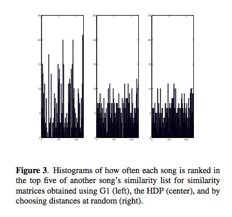

ISMIR Day 2 Session 1 - Plenary Session 3: Content-based Similarity & Retrieval 1
Hit Song Science is Not Yet a Science
Francois Pachet and Pierre RoyThe researchers look at a large set of data (32000 titles, with 632 labels per title:
- acoustic - genre, epoch, instrumentation
- facts - langauge, subjective, popularity
- subjective - campfire, farewll

The used MIR techniques to see if the could learn any of these labels from acoustic features.
- Grounding and semantics of labels are not related - labes representing acoustic properties are not always easy to learn using acoustic features, but some highly subjective labels can be well modeled by acoustic classifiers.
- they cannot predict hits - does a likeliness of a hit depend only on the quality of the song. Quotes / Summarizes the Duncan Watts study that indicate that social effects are extremely important.
Content-Based Musical Similarity Computation Using the Hierarchical Dirichlet Process
by Matthew Hoffman, David Blei and Perry Cook
Timbral similarity - motivations: Query, playlists, recommendation. Matt started off with explaining the classic approaches: mixtures of gaussians, kl-divergence. HDP Details - Dirichlet Process Mixture Model (DPMM). Matt uses the chinese restaurant metaphor effectively to explaining the DPMM.

Evaluation: Use the SXSW artist. 4 models, single guassian, k-component GMMs, VQ Codebook, and HDP. Use genre as a proxy for similarity. Results show that HDP shows an improvement over the other techniques. HDP and the VQ methods did not produce many hubs or anti hubs (songs that are wrongly evaluated as similar or dissimilar to all other songs). And it is faster. Good paper - and very solid looking work, although the data set is quite small.
Learning a Metric for Music Similarity
Malcolm Slaney, Kilian Weinberger and William WhiteMalcolm presents work at Yahoo. Goal: Describe techniques to build a metric space for better classification or similarity of songs. Euclidean metrics - scale matters a lot.independece. Malcolm suggests applying a rotation and scaling matrix to features to deal with these issues of scale and independence. Where does the matrix come from?
- Whiten - normalize the data so all features have same variance.
- LDA - maximize the inter vs. intra class distance.
- RCA - equalize class dimension
- NCS - Neighborhood component analysis
Optimize the classification error - but this can be problematic with KNN because of the boundary problem. The Large Margin nearest neighbor can help this.

Slaney encourages us to use these simple methods to improve our similairty metrics.